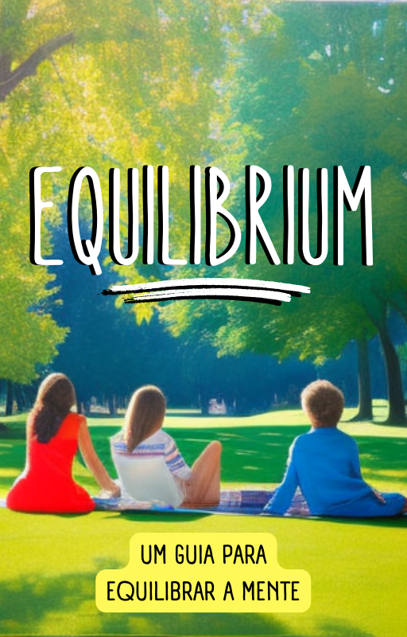

Livro
Digital!
Digital!

Não deixe que a ansiedade, o estresse e a sobrecarga dominem a sua vida! Você não precisa enfrentar esses desafios sozinho - há inúmeras maneiras de obter o apoio que você precisa. Descubra como outras pessoas têm superado essas mesmas dificuldades e comece a trilhar o caminho para uma vida mais calma e feliz hoje mesmo!
Você sabia que milhões de pessoas em todo o mundo sofrem com problemas relacionados à saúde mental? Ansiedade, estresse e até mesmo a raiva podem afetar negativamente a qualidade de vida, relacionamentos e até mesmo a saúde física. Mas a boa notícia é que não precisa ser assim!
Com este livro altamente detalhado e intuitivo, você vai aprender técnicas testadas e comprovadas por profissionais de saúde mental no mundo todo. Começe ainda hoje a buscar pela estabilidade mental necessário para uma vida plena, feliz e saudável.
Com dicas práticas e acessíveis, você vai adotar hábitos saudáveis e compreender suas emoções para cuidar da sua saúde mental de forma efetiva. E a melhor parte? Você pode começar agora mesmo, com apenas um clique!
Não deixe mais o estresse, a ansiedade e a raiva tomarem conta da sua vida. Transforme sua mente e alcance o equilíbrio mental que você precisa para ter uma vida plena e feliz. Garanta já o seu livro digital e comece a mudar a sua vida hoje mesmo!
Aprenda a controlar sua ansiedade e reduzir seus níveis de estresse com técnicas comprovadas que vão ajudá-lo a recuperar o seu emocional.
Aprenda a identificar e desafiar as crenças que limitam seu potencial e descubra como desenvolver uma mentalidade mais positiva e de sucesso.
Aprenda a respirar corretamente e a meditar para alcançar a tranquilidade mental e melhorar sua saúde em geral.
Com "Equilíbrium - Um GUIA para equilibrar a MENTE", você vai aprender técnicas eficazes para compreender e lidar com suas emoções de maneira positiva. Você encontrará dicas para gerenciar a ansiedade, controlar a raiva, lidar com o estresse e muito mais.
Imagina finalmente ter o controle das suas emoções, sentindo-se calmo em todas as situações. Com este guia, você terá as ferramentas necessárias para lidar com as emoções difíceis de maneira saudável, para que possa focar no que realmente importa em sua vida.
E tem mais: adquirindo o seu exemplar agora, você receberá um bônus EXCLUSIVO que potencializará ainda mais seus resultados.

Não perca tempo: comece hoje mesmo a experimentar uma vida mais equilibrada e saudável com "Equilíbrium".
Já se pegou preso em um ciclo de pensamentos negativos? Esse é um problema comum que afeta muitas pessoas e pode ser muito prejudicial para a saúde mental. É por isso que a terceira parte do livro "Equilíbrium" dedica-se a ajudar os leitores a lidar com seus pensamentos e promover uma mentalidade mais saudável, fornecendo exercícios inéditos para gestão de raiva, controle do estresse, controle da ansiedade e muito mais!
Descubra como a atividades físicas e mentais podem melhorar sua saúde e conheça os exercícios mais indicados para fortalecer a mente e o corpo.
Aprenda a importância do sono adequado para a saúde mental e conheça as técnicas para melhorar a qualidade do seu sono e se sentir mais energizado e equilibrado.
Aprenda a criar hábitos saudáveis que ajudem a manter sua mente e corpo em estáveis e a desfrutar de uma vida mais saudável e feliz.
Existem várias abordagens diferentes, cada uma com suas próprias técnicas e estratégias exclusivas. Já pensou em experimentar uma abordagem terapêutica para ajudar a equilibrar sua mente?
Escolher uma abordagem terapêutica para seguir não é uma tarefa fácil, cada abordagem pode ajudar indivíduos em situações específicas, por isso temos uma seção dedicada com diferentes abordagens para que você possa aprender sobre cada uma e também decidir se deseja ou não seguir alguma.
É importante lembrar que nem todas as abordagens funcionam para todas as pessoas. Por isso, é importante consultar um profissional de saúde mental para descobrir qual abordagem terapêutica é a melhor para você. Não perca mais tempo lutando contra seus problemas sozinho, descubra agora qual abordagem terapêutica pode ser a chave para evoluir sua mente.
Descubra como a TCC pode ajudá-lo a transformar seus padrões de pensamento e comportamento para se sentir melhor consigo mesmo e com os outros.
Descubra como a ACT pode ajudá-lo a lidar com pensamentos e sentimentos negativos e a se comprometer com a mudança necessária para alcançar a estabilidade mental
Aprenda a lidar com seus medos e fobias através da terapia de exposição, uma técnica que ajuda a superar as limitações impostas pelo medo.
Não permita que seus pensamentos negativos ditem o rumo da sua vida. Aprenda a lidar com eles de maneira saudável e construtiva, usando as técnicas certas. O Equilíbrium é o guia definitivo que vai te ajudar nessa jornada.
Invista agora e descubra as melhores estratégias e abordagens comprovadas que vão te levar ao progressão mental duradoura que você tanto deseja.
Se você chegou até aqui, provavelmente está considerando seriamente a possibilidade de adquirir o livro "Equilíbrium". Mas pode estar se perguntando: por que deveria investir meu dinheiro neste livro?
Bem, a resposta é simples. Este livro é uma ferramenta valiosa para aqueles que desejam melhorar sua saúde mental e alcançar um equilíbrio emocional duradouro. Os tópicos abordados no livro são fundamentais para qualquer pessoa que busca ter uma vida mais plena e feliz, se distanciando de transtornos mentais e emocionais que prejudicam o bem-estar, você é a única pessoa que pode transformar a si mesma.
Ao adquirir o livro, você terá acesso a informações e estratégias poderosas que podem ajudá-lo a identificar padrões negativos de pensamento, gerenciar suas emoções, criar hábitos saudáveis e usar abordagens terapêuticas eficazes para lidar com problemas emocionais mais complexos.
Além disso, o livro foi cuidadosamente elaborado com base em pesquisas atualizadas e técnicas comprovadas no mundo todo. As informações apresentadas no livro são claras, concisas e de fácil aplicação, o que significa que você poderá começar a melhorar sua saúde mental desde a primeira leitura. Então, por que não investir em si mesmo e adquirir "Equilíbrium" hoje mesmo?
Com este livro transformador, você pode finalmente encontrar a evolução mental que tanto deseja. Normalmente vendido por R$147,00, hoje oferecemos a você uma oportunidade única. Adquira agora por apenas R$67,00 enquanto durarem as vagas e tenha acesso a um desconto de mais de 50%. Isso mesmo, mais de 50% de economia em um material valioso e transformador como este.
Você pode estar se perguntando: por que devo investir meu dinheiro neste livro? Bem, pense nisso como um investimento em sua saúde mental e bem-estar. Quanto você gastaria em sessões de terapia para adquirir 10% deste conhecimento fornecido? Com apenas um pagamento de R$67,00, você terá acesso vitalício a sua cópia com informações e estratégias poderosas que podem ajudá-lo a superar esses problemas de forma natural e duradoura.
Além disso, oferecemos a você uma garantia de 30 dias. Isso significa que você tem tempo suficiente para testar o livro, colocar em prática as técnicas e estratégias apresentadas e avaliar se elas funcionam para você. Se por qualquer motivo você não estiver satisfeito, basta entrar em contato conosco e nós devolveremos todo o seu dinheiro. Sem perguntas, sem burocracia, sem enrolação.
Não perca esta chance de economizar mais de 50% em um livro valioso e transformador que pode mudar sua vida para sempre. Adquira agora seu exemplar de Equilíbrium - O guia para encontrar o equilíbrio mental.